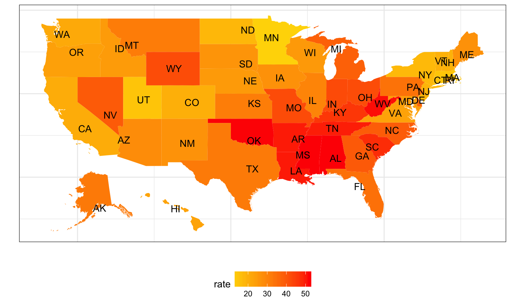

p8105_final_project
Yulan Zhang
November 2, 2017
cod_data = read_csv("./data/NCHS_-_Potentially_Excess_Deaths_from_the_Five_Leading_Causes_of_Death.csv") %>%
clean_names() %>%
na.omit() %>%
filter(!(state == "United States")) %>%
separate(., percent_potentially_excess_deaths, into = c("percent_excess_death"), sep = "%") %>%
mutate(percent_excess_death = as.numeric(percent_excess_death), mortality = observed_deaths/population * 10000, mortality = as.numeric(mortality)) %>%
select(year, cause_of_death, state, locality, observed_deaths, population, expected_deaths, potentially_excess_deaths, percent_excess_death, mortality, hhs_region)## Parsed with column specification:
## cols(
## Year = col_integer(),
## `Cause of Death` = col_character(),
## State = col_character(),
## `State FIPS Code` = col_character(),
## `HHS Region` = col_integer(),
## `Age Range` = col_character(),
## Benchmark = col_character(),
## Locality = col_character(),
## `Observed Deaths` = col_integer(),
## Population = col_integer(),
## `Expected Deaths` = col_integer(),
## `Potentially Excess Deaths` = col_integer(),
## `Percent Potentially Excess Deaths` = col_character()
## )## Warning: Too many values at 191748 locations: 1, 2, 3, 4, 5, 6, 7, 8, 9,
## 10, 11, 12, 13, 14, 15, 16, 17, 18, 19, 20, ...##columns removed
#"state_fips_code" "age_range" "benchmark" "potentially_excess_deaths" "percent_excess_death" "mortality" - the
yearvariable contains data collected from 2005-2015. - filtered out
United Statesin thestatevariable. - Added a variable
mortalitywhich is calculated by observed_deaths/population * 10000. This variable indicates the number of deathes observed in every 10000 people in the three geographic regions:Metropolitan,NonmetropolitanandAll.
xs2329: This bar graph shows the distribution of cause of death within mortality in the three geographic regions: Metropolitan, Nonmetropolitan and All.
cod_data %>%
group_by(cause_of_death) %>%
ggplot(aes(x = locality, y = mortality, fill = cause_of_death)) +
geom_col() +
theme(axis.text.x = element_text(angle = 45, hjust = 1)) +
labs(title="Locality vs. Mortality") +
labs(x="locality", y="mortality") 
cod_data %>%
group_by(cause_of_death) %>%
ggplot(aes(x = locality, y = mortality)) + geom_boxplot(aes(color = cause_of_death), na.rm = T) +
theme(axis.text.x = element_text(angle = 45, hjust = 1)) +
labs(title="Locality vs. Mortality") +
labs(x="locality", y="mortality") 
mortality_lm = lm(mortality ~locality, data = cod_data)
summary(mortality_lm)##
## Call:
## lm(formula = mortality ~ locality, data = cod_data)
##
## Residuals:
## Min 1Q Median 3Q Max
## -5.1454 -2.9547 -1.2983 0.9988 19.8959
##
## Coefficients:
## Estimate Std. Error t value Pr(>|t|)
## (Intercept) 4.10331 0.01672 245.474 <2e-16 ***
## localityMetropolitan -0.22576 0.02372 -9.519 <2e-16 ***
## localityNonmetropolitan 1.14451 0.02438 46.942 <2e-16 ***
## ---
## Signif. codes: 0 '***' 0.001 '**' 0.01 '*' 0.05 '.' 0.1 ' ' 1
##
## Residual standard error: 4.317 on 191745 degrees of freedom
## Multiple R-squared: 0.01821, Adjusted R-squared: 0.0182
## F-statistic: 1778 on 2 and 191745 DF, p-value: < 2.2e-16interpretation on linear regression: We expect to see 0.22576 less deaths for every 10000 people in metropolitan region as compared to all regions. We expect to see 1.14451 more death for every 10000 people in nonmetropolitan region as compared to all regions.
<<<<<<< HEAD
### Question of concern: If percent excess death has significant difference between metro and non-metro groups.
gp_cod_data = cod_data %>%
group_by(year, locality)%>%
summarise(mean_ped = mean(percent_excess_death)) #doesn't work. Ask TA.
ggplot(gp_cod_data, aes(x = year, y = mean_ped, fill = locality)) + geom_bar(stat = "identity")+
facet_grid(. ~ locality) 
gp_locality_lm = lm(percent_excess_death ~locality, data = cod_data)
broom::tidy(gp_locality_lm)## term estimate std.error statistic p.value
## 1 (Intercept) 33.886344 0.07132652 475.08758 0.000000e+00
## 2 localityMetropolitan -2.060276 0.10119432 -20.35960 4.779185e-92
## 3 localityNonmetropolitan 8.047238 0.10403428 77.35179 0.000000e+00=======
<<<<<<< HEAD
<<<<<<< HEAD
# How should we help nonmetropolitan areas improve public health?
cod_datayr2 = read_csv("./data/NCHS_-_Potentially_Excess_Deaths_from_the_Five_Leading_Causes_of_Death.csv") %>%
clean_names() %>%
na.omit() %>%
filter(!(state == "United States")) %>%
separate(., percent_potentially_excess_deaths, into = c("percent_excess_death"), sep = "%") %>%
mutate(percent_excess_death = as.numeric(percent_excess_death), mortality = observed_deaths/population * 10000, mortality = as.numeric(mortality)) %>%
select(year, cause_of_death, state, benchmark, locality, observed_deaths, population, expected_deaths, potentially_excess_deaths, percent_excess_death, mortality)## Parsed with column specification:
## cols(
## Year = col_integer(),
## `Cause of Death` = col_character(),
## State = col_character(),
## `State FIPS Code` = col_character(),
## `HHS Region` = col_integer(),
## `Age Range` = col_character(),
## Benchmark = col_character(),
## Locality = col_character(),
## `Observed Deaths` = col_integer(),
## Population = col_integer(),
## `Expected Deaths` = col_integer(),
## `Potentially Excess Deaths` = col_integer(),
## `Percent Potentially Excess Deaths` = col_character()
## )## Warning: Too many values at 191748 locations: 1, 2, 3, 4, 5, 6, 7, 8, 9,
## 10, 11, 12, 13, 14, 15, 16, 17, 18, 19, 20, ...average percent access death for each cause in different locality 2005-2015
cod_datayr2%>%
filter(benchmark == "2010 Fixed")%>%
group_by(cause_of_death,year, locality)%>%
mutate(year_percent_death=mean(percent_excess_death))%>%
distinct(year, cause_of_death, locality, .keep_all = TRUE)%>%
ungroup(year, locality)%>%
ggplot(aes(x = year, y = year_percent_death))+
geom_line(aes(color = cause_of_death),size = 1) +
facet_grid(.~locality)+
theme(axis.text.x = element_text(angle = 45, hjust = 1))+
labs(title = "Average yearly percent deaths for different locality and benchmarks") 
cod_datayrlm = cod_datayr2%>%
filter(locality == "Nonmetropolitan",
benchmark == "2010 Fixed")
lmpop = lm(data=cod_datayrlm, percent_excess_death~year+cause_of_death)
summary(lmpop)##
## Call:
## lm(formula = percent_excess_death ~ year + cause_of_death, data = cod_datayrlm)
##
## Residuals:
## Min 1Q Median 3Q Max
## -55.456 -9.828 0.576 10.404 39.489
##
## Coefficients:
## Estimate Std. Error
## (Intercept) 769.06335 67.48938
## year -0.36941 0.03358
## cause_of_deathChronic Lower Respiratory Disease 27.06490 0.33901
## cause_of_deathHeart Disease 13.90257 0.32844
## cause_of_deathStroke 12.91441 0.33784
## cause_of_deathUnintentional Injury 31.18470 0.32812
## t value Pr(>|t|)
## (Intercept) 11.39 <2e-16 ***
## year -11.00 <2e-16 ***
## cause_of_deathChronic Lower Respiratory Disease 79.83 <2e-16 ***
## cause_of_deathHeart Disease 42.33 <2e-16 ***
## cause_of_deathStroke 38.23 <2e-16 ***
## cause_of_deathUnintentional Injury 95.04 <2e-16 ***
## ---
## Signif. codes: 0 '***' 0.001 '**' 0.01 '*' 0.05 '.' 0.1 ' ' 1
##
## Residual standard error: 14.92 on 19718 degrees of freedom
## Multiple R-squared: 0.365, Adjusted R-squared: 0.3649
## F-statistic: 2267 on 5 and 19718 DF, p-value: < 2.2e-16Based on 2010 fixed benchmark, unintentional injury and chronic lower respiratory disease has on average the highest excess death percentage in nonmetropolitan areas and needs more attention from public health experts.
#For each of the five cause of death, what is the mean percent of excess death? It is different across locality.
library(forcats)
names(cod_data)## [1] "year" "cause_of_death"
## [3] "state" "locality"
## [5] "observed_deaths" "population"
## [7] "expected_deaths" "potentially_excess_deaths"
## [9] "percent_excess_death" "mortality"
## [11] "hhs_region"cod_data %>%
na.omit %>%
group_by(cause_of_death) %>%
mutate(mean_percent_excess_death = mean(percent_excess_death)) %>%
ungroup(cause_of_death) %>%
mutate(cause_of_death = fct_reorder(cause_of_death, mean_percent_excess_death)) %>%
ggplot(aes(x = cause_of_death, y = percent_excess_death, fill = cause_of_death)) +
geom_boxplot() +
facet_grid(~locality) +
theme(axis.text.x = element_text(angle = 20, hjust = 1)) +
theme(legend.position = "bottom")
##As shown in the boxplots for all three regions, the rank of the five cause of death remain the same for different localities. For all five causes, the mean percent of death is lower for `Metropolitan` and higher for `Nonmetropolotan`, with respect to `All` Locality.yz3306: As shown in the boxplots for all three regions, the rank of the five cause of death remain the same for different localities. For all five causes, the mean percent of death is lower for Metropolitan and higher for Nonmetropolotan, with respect to All Locality.
yz3306:regress percent of excess death on cause of death, which is a categorical variable. with respect to cancer, the least of the five causes, all 4 have additional percent of death as evaluated by the estimates. The results give statisically significant estimates .
cod_lm_yz1 = lm(percent_excess_death ~cause_of_death, data = cod_data)
broom::tidy(cod_lm_yz1)## term estimate std.error
## 1 (Intercept) 21.60686 0.08399078
## 2 cause_of_deathChronic Lower Respiratory Disease 21.08880 0.12091802
## 3 cause_of_deathHeart Disease 10.89773 0.11879905
## 4 cause_of_deathStroke 12.92196 0.12046778
## 5 cause_of_deathUnintentional Injury 25.77100 0.11875825
## statistic p.value
## 1 257.25277 0
## 2 174.40579 0
## 3 91.73246 0
## 4 107.26483 0
## 5 217.00389 0#cod_lm_yz2 = lm(percent_excess_death ~locality, data = cod_data)
#broom::tidy(cod_lm_yz2)
cod_lm_yz3 = lm(percent_excess_death ~cause_of_death + locality, data = cod_data)
broom::tidy(cod_lm_yz3)## term estimate std.error
## 1 (Intercept) 19.733487 0.09566546
## 2 cause_of_deathChronic Lower Respiratory Disease 21.236141 0.11679788
## 3 cause_of_deathHeart Disease 10.904673 0.11474277
## 4 cause_of_deathStroke 13.069260 0.11636410
## 5 cause_of_deathUnintentional Injury 25.770878 0.11470336
## 6 localityMetropolitan -2.035929 0.08834641
## 7 localityNonmetropolitan 8.148594 0.09083995
## statistic p.value
## 1 206.27598 0.000000e+00
## 2 181.81957 0.000000e+00
## 3 95.03582 0.000000e+00
## 4 112.31351 0.000000e+00
## 5 224.67413 0.000000e+00
## 6 -23.04484 2.395346e-117
## 7 89.70276 0.000000e+00#Do we need to include the plot of the linear model? Some plots.
#Why is everything significant? Is there a problem? Don't focus on p-value. Calculate CI and other estimates.
#How to make a scatterplot for regression with catagorical variables? We don't need to.
#How to interpret percent excess death? According to the benchmark of the three lowest states.
#How to make a map? Still under investigation...map_cod_data = cod_data %>%
filter(locality == "Metropolitan") %>%
select(state, locality, percent_excess_death) %>%
group_by(state) %>%
summarise(mean_ped = mean(percent_excess_death)) %>%
dplyr::filter(!(state == "District of\nColumbia"))
map = as.tibble(fifty_states) %>%
group_by(id) %>%
summarize(clong = mean(long), clat = mean(lat)) %>%
filter(!(id == "district of columbia"))
df <- cbind(map, state.abb, state.center, rate = unique(map_cod_data$mean_ped))
ggplot(df, aes(map_id = id)) +
geom_map(aes(fill = rate), map = fifty_states) +
expand_limits(x = fifty_states$long, y = fifty_states$lat) +
labs(x = "", y = "") +
theme(panel.background = element_blank(),
axis.text.x = element_blank(),
axis.text.y = element_blank(),
axis.ticks = element_blank()) +
geom_text(aes(x = clong, y = clat, label = state.abb)) 
p <- ggplot(gapminder, aes(gdpPercap, lifeExp, color = continent)) +
geom_point(aes(size = pop, frame = year, ids = country)) +
scale_x_log10()## Warning: Ignoring unknown aesthetics: frame, idsp <- ggplotly(p) %>%
animation_opts(
1000, easing = "elastic", redraw = FALSE
) %>%
animation_button(
x = 1, xanchor = "right", y = 0, yanchor = "bottom"
) %>%
animation_slider(
currentvalue = list(prefix = "YEAR ", font = list(color="red"))
)## We recommend that you use the dev version of ggplot2 with `ggplotly()`
## Install it with: `devtools::install_github('hadley/ggplot2')`region_cod_data = cod_data %>%
select(state, locality, hhs_region, percent_excess_death) %>%
group_by(state,locality, hhs_region) %>%
summarise(mean_ped = mean(percent_excess_death)) %>%
dplyr::filter(!(state == "District of\nColumbia")) %>%
mutate(hhs_region = as.character(hhs_region))
region_lm = lm(region_cod_data$mean_ped~region_cod_data$hhs_region)
rl1 = broom::tidy(region_lm)
kable(rl1)| term | estimate | std.error | statistic | p.value |
|---|---|---|---|---|
| (Intercept) | 22.897478 | 2.124541 | 10.777612 | 0.0000000 |
| region_cod_data$hhs_region10 | 6.919893 | 3.302733 | 2.095202 | 0.0379936 |
| region_cod_data$hhs_region2 | -1.678888 | 4.456475 | -0.376730 | 0.7069571 |
| region_cod_data$hhs_region3 | 15.028044 | 3.161418 | 4.753577 | 0.0000050 |
| region_cod_data$hhs_region4 | 27.459220 | 2.776844 | 9.888645 | 0.0000000 |
| region_cod_data$hhs_region5 | 11.065534 | 2.962531 | 3.735162 | 0.0002743 |
| region_cod_data$hhs_region6 | 23.938689 | 3.103091 | 7.714466 | 0.0000000 |
| region_cod_data$hhs_region7 | 12.500192 | 3.302733 | 3.784802 | 0.0002292 |
| region_cod_data$hhs_region8 | 5.138616 | 2.962531 | 1.734536 | 0.0850722 |
| region_cod_data$hhs_region9 | 8.502314 | 3.302733 | 2.574327 | 0.0111054 |
region_locality_lm =lm(region_cod_data$mean_ped ~ region_cod_data$hhs_region+region_cod_data$locality)
rl2 = broom::tidy(region_locality_lm)
kable(rl2)| term | estimate | std.error | statistic | p.value |
|---|---|---|---|---|
| (Intercept) | 21.518530 | 2.080719 | 10.3418699 | 0.0000000 |
| region_cod_data$hhs_region10 | 6.592074 | 2.933587 | 2.2471039 | 0.0262563 |
| region_cod_data$hhs_region2 | -0.892122 | 3.959828 | -0.2252931 | 0.8220919 |
| region_cod_data$hhs_region3 | 15.098291 | 2.807614 | 5.3776243 | 0.0000003 |
| region_cod_data$hhs_region4 | 27.131401 | 2.466649 | 10.9992936 | 0.0000000 |
| region_cod_data$hhs_region5 | 10.737714 | 2.631517 | 4.0804272 | 0.0000765 |
| region_cod_data$hhs_region6 | 23.610869 | 2.756320 | 8.5660831 | 0.0000000 |
| region_cod_data$hhs_region7 | 12.172373 | 2.933587 | 4.1493141 | 0.0000587 |
| region_cod_data$hhs_region8 | 4.810797 | 2.631517 | 1.8281458 | 0.0697354 |
| region_cod_data$hhs_region9 | 8.174495 | 2.933587 | 2.7865190 | 0.0060956 |
| region_cod_data$localityMetropolitan | -2.159388 | 1.555863 | -1.3879042 | 0.1674526 |
| region_cod_data$localityNonmetropolitan | 7.279690 | 1.582741 | 4.5994187 | 0.0000096 |
Interpretation: U.S. Department of Health and Human Services public health regions (1 through 10) are used as a categorical variable in the above regressions. Specific region classification is shown in the figure below.
[attach image here].
As shown in the above summary tables, with respect to region 1, only region 2 have negative estimated coefficient, indicating less mean percentage of excess death . Specifically, comparing with region 1, region 2 have 1.67% less mean percentage of excess death on average. From region 3 to region 10, the mean percentage of excess death is higher comparing with region 1. Similiar results yield from regression adjusted for Locality. Adjusting locality, region 4 and 6 have top two highest increase in mean percetage of excess death with respect to region 1. Adjusting for different regions, similar result yield that, on average, metropolitan have 2% less than overall mean percetage of excess deaths and nonmetropolitan have 7% more than overall mean percetage of excess death.